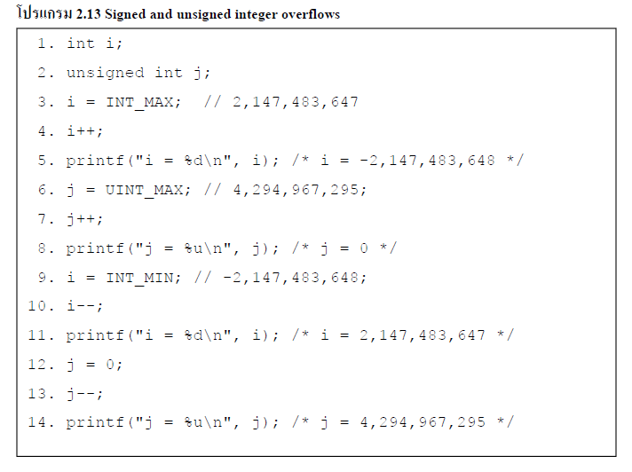

| มักจะเกิดขึ้นเมื่อ จำนวน integer มีค่าเกินกว่าค่าสูงสุดของค่า integer ที่ กำหนดไว้หรือลดลงเกินกว่าค่าต่ำสุด ซึ่ง integer overflow จะเกี่ยวข้องกับการแทนค่าข้อมูลพื้นฐานด้วย Overflow นั้นสามารถเป็นได้ทั้ง signed หรือ unsigned ซึ่ง signed overflow จะเกิดขึ้นเมื่อมีการดำเนินการไปยัง signed bit ส่วน unsigned overflow จะเกิดขึ้นเมื่อไม่สามารถแทนค่าพื้นฐานนั้นได้ จาก โปรแกรม 2.13 แสดงให้เห็นถึงผลกระทบของเกิด overflow ใน signed integer และ unsigned integer ซึ่ง signed integer i ถูกใส่ค่าไว้สูงสุดที่ 2,147,483,647 ในบรรทัดที่ 3 และเพิ่มขึ้นค่า ในบรรทัด 4. ผลการดำเนินงานจะทำให้เกิด integer overflow เกิดขึ้น และ เมื่อ i ถูกกำหนดค่าเป็น -2,147,483,648 (ซึ่งเป็นค่าต่ำสุดสำหรับชนิดข้อมูล int) ผลของการดำเนินการก็จะเป็น (2,147,483,647 + 1 = -2,147,483,648) จะเห็นได้ชัดว่ามีข้อผิดพลาดทางคณิตศาสตร์เกิดขึ้น โดย Integer overflow นอกจากจะเกิดขึ้นเมื่อมีการเพิ่มของ unsigned integer ที่มีค่าสูงสุด (บรรทัด 6-8) และ decrementing signed integer ที่มี่ค่าต่ำสุดแล้ว (บรรทัด 9-11) หรือ decrementing unsigned integer ที่ค่าต่ำสุดที่แสดงไว้บนบรรทัด 12 -14 | ||
 |
||
| video | ||